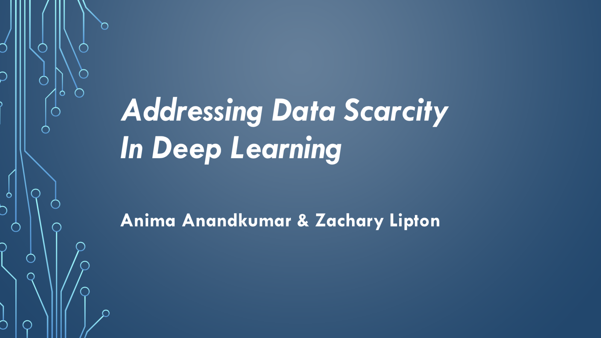
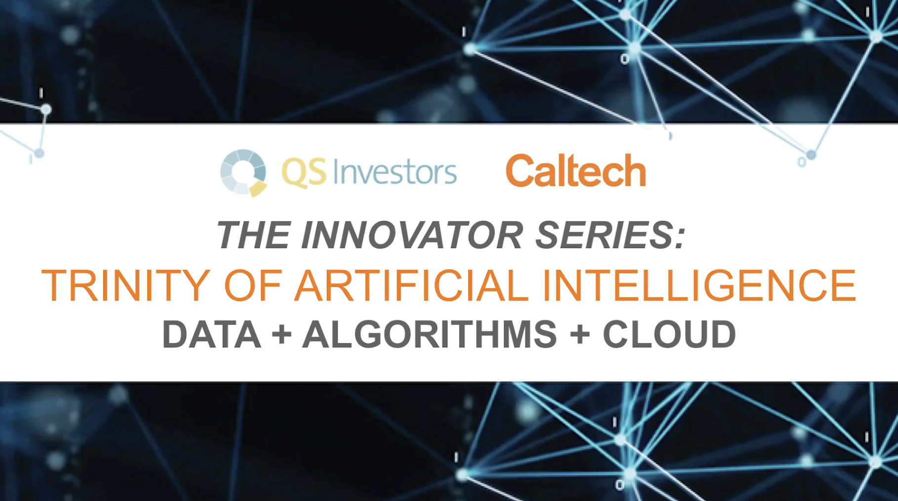
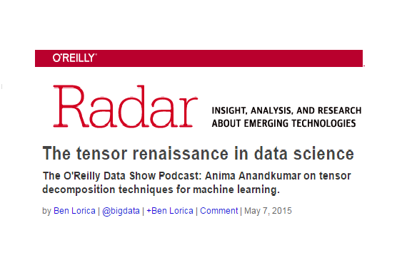

All Talks
-

Tackling Data Scarcity in Deep Learning
The Conference on Uncertainty in Artificial Intelligence (UAI), August 2018
slides(part1)slides(part2) -

AI: present and future
QS investors Caltech innovator series, June 2018
-
Building the next generation of AI
Particle Design, May 2018
-
Global Governance of AI Roundtable
World Government Summit, March 2018
-
Robots Get Humanlike Brains With Machine Learning and A.I.
DavidNazarNews, Dec. 2017
-
Leaning at Scale: Deep, Distributed and Multi-dimensional
MLconf, Nov. 2017
-
Tensors for Large-scale Topic Modeling and Deep Learning
AWS re:Invent, Nov. 2017
-
Talk in Silicon Valley Future Forum
Silicon Valley Future Forum, Aug. 2017
-
Tutorial on distributed deep learning using apache mxnet: part 1
Strata Data Conference, July 2017
-
Tutorial on distributed deep learning using apache mxnet: part 2
Strata Data Conference, July 2017
-
Distributed deep learning on AWS using apache mxnet
Strata Data Conference, July 2017
-
Short interview in IIT Bay Area Leadership Conf
IIT Bay Area Leadership Conf,July 2017
-
Panel discussion: Artificial Intelligence
IIT Bay Area Leadership Conference, June 2017
-
Efficient Distributed Deep Learning Using MXNet
Simons Institute, May 2017
-
Panel discussion on "AI and its impact on job"
IITM alumni meeting, April 2017
-
Distributed Deep Learning
Anita Borg Institute, Feb. 2017
-

Guaranteed Non-convex Learning Algorithms through Tensor Factorization
ICLR 2016, May 2016
-
Tensor Methods for Large-Scale Machine Learning
Southern California Machine Learning Symposium, May 2016
-
NIPS 2015 Workshop on Nonconvex Optimization
Dec. 2015 slides
-
Tensor Methods - A New Paradigm for Training Probabilistic Models, Neural Networks and Reinforcement Learning
MLConf at SF, Nov. 2015
-

The tensor renaissance in data science
The O'Reilly Data Show Podcast, July 2015
-

Learning Overcomplete Latent Variable Models through Tensor Methods
COLT 2015, July 2015
-
Tensor Methods: A New Paradigm for Training Probabilistic Models and Feature Learning
MLconf , May 2015
-
Constructing Informative Features for Discriminative Learning
Simons Institute, March 2015 slides
-
Tensor methods for largescale unsupervised learning applications to topic and community modeling
Strata at the Hardcore Data Science Track, March 2015
-
Tackling Big Data with Tensor Methods
Data Science Initiative, Dec. 2014
-
Tensor Methods for Learning Latent Variable Models: Theory and Practice
Simons Institute, Nov. 2014
-
Guaranteed Learning of Latent Variable Models: Overlapping Community Models and Overcomplete
University of Washington, Feb. 2014
-
Robust PCA via Non-convex Methods: Provable Bounds
Joint work with Praneeth Netrapalli, U. N. Niranjan, Prateek Jain and Sujay Sanghavi slides
-
Tensor Methods for Learning Latent Variable Models: Theory and Practice
Simons Institute slides
-

High-Dimensional Graphical Model Selection
Joint work with Vincent Tan (U. Wisc.) and Allay Willsky (MIT)
-
Fast and Guaranteed Learning of Overlapping Communities via Tensor Methods
Cornell CAM Colloquium, Sept. 2013
-
A Tensor Spectral Approach to Learning Mixed Membership Community Models
NC State ECE, May 2013
-
A Tensor Spectral Approach to Learning Mixed Membership Community Models
Joint work with Rong Ge (Princeton), Daniel Hsu (Microsoft Research), Sham Kakade (Microsoft Research)